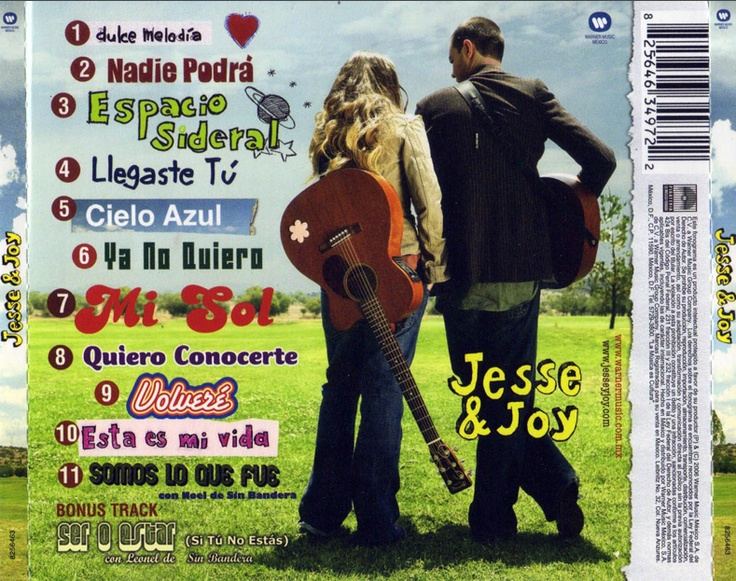

Jesse y Joy ¡Musica que llega al corazon!
Biografía
Jesse & Joy es un dúo de música pop mexicano conformado por los hermanos Jesse y Joy Huerta. Desde pequeños desarrollaron su talento musical en un ambiente bilingüe y multicultural.
Comenzaron su carrera en 2005 bajo Warner Music, lanzando su primer álbum “Esta Es Mi Vida” en 2006. Canciones como “Espacio Sideral” les dieron reconocimiento en la escena latina.
Con el álbum “¿Con Quién Se Queda el Perro?” (2011) alcanzaron gran éxito, especialmente con “Corre”, que les valió un Grammy Latino. Desde entonces, han lanzado más discos, como “Un Besito Más” (2015) y “Aire” (2020).
Además de su música, Jesse & Joy participan en causas sociales y mantienen una conexión cercana con sus fans alrededor del mundo.
